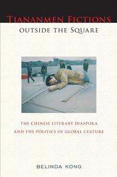

How the Tiananmen Square protest and massacre haunts the work of writers in the Chinese diaspora
How the Tiananmen Square protest and massacre haunts the work of writers in the Chinese diaspora


 How the Tiananmen Square protest and massacre haunts the work of writers in the Chinese diaspora
How the Tiananmen Square protest and massacre haunts the work of writers in the Chinese diaspora

|  |
Tiananmen Fictions Outside the SquareThe Chinese Literary Diaspora and the Politics of Global CultureBelinda Kongpaper EAN: 978-1-43990-759-7 (ISBN: 1-4399-0759-5) |
"Tiananmen Fictions Outside the Square offers a new and exciting paradigm for Sinophone and diasporic literature. Kong demonstrates how the Tiananmen incident of 1989 has remained a powerful memory for key exiled writers, whose transnational mobility redefines the meaning of homeland and identity."
—Yomi Braester, author of Painting the City Red: Chinese Cinema and the Urban Contract
An exciting analysis of the myriad literary effects of Tiananmen, Belinda Kong's Tiananmen Fictions Outside the Square is the first full-length study of fictions related to the 1989 movement and massacre. More than any other episode in recent world history, Tiananmen has brought a distinctly politicized Chinese literary diaspora into stark relief.
Kong redefines Tiananmen's meaning from an event that ended in local political failure to one that succeeded in producing a vital dimension of contemporary transnational writing today. She spotlights key writers—Gao Xingjian, Ha Jin, Annie Wang, and Ma Jian—who have written and published about the massacre from abroad. Their outsider/distanced perspectives inform their work, and reveal how diaspora writers continually reimagine Tiananmen's relevance to the post-1989 world at large.
Compelling us to think about how Chinese culture, identity, and politics are being defined in the diaspora, Tiananmen Fictions Outside the Square candidly addresses issues of political exile, historical trauma, global capital, and state biopower.
Excerpt available at www.temple.edu/tempress
"Tiananmen Fictions Outside the Square, is a first-rate literary study of historical and interpretive depth, well scaled in textual and contextual detail, and compellingly deep in its sustained and contrastive focus on four well-chosen novels. Kong�s grasp and integration of novelistic form, literary theory, historical context, and political issues of state power is well done: issues of memory, body, trauma, selfhood, social struggle, as well as class and gendered differences, are credibly realized in the context of these four novels. Clearly written, with energy, care, verve, control and conviction, Tiananmen Fictions Outside the Square should have a broad impact on the fields and genres of Chinese studies�in both literary and historical areas�as well as on more specialized domains like postcolonial, diasporic, and Asian American studies."
—Rob Wilson, Professor of Literature at the University of California, Santa Cruz, and author of Reimagining the American Pacific: From South Pacific to Bamboo Ridge and Beyond
"This penetrating, well-theorized, lucid book is the first to ponder the global literary impact of 'Tiananmen,' now the generally accepted shorthand term for the 1989 Beijing democracy movement and the army massacre that ended it. Kong provides close readings of four Tiananmen-related works.... Recommended."
—Choice
"Belinda Kong's book is a welcome addition to the study of literature of atrocity....The book is well written, the arguments convincingly articulated.... [Kong] is astute and cognizant of the elite background of the writers whose works she studies.... The reader comes away with rich insights regarding both these four writers and the global politics of Chinese diasporic writing, particularly in light of the 2012 announcement of the Nobel Prize for Literature being awarded to the Chinese writer, Mo Yan."
—The Review of Politics
"Tiananmen Fictions Outside the Square examines from the perspective of diaspora theory works of Sinophone literature that relate directly or indirectly to the Tiananmen crackdown of 4 June 1989. The framework is intriguing, and takes to a higher level the theoretical conceptions of amnesia and memory and the complex relations of �migr� writers to the Chinese homeland. The layered writing draws together various strands of diaspora theory and imparts new meanings to the construction of 'Chineseness'."
—The China Journal
"[E]xcellent.... Kong�s aim is to provide a solid introduction to a 'distinctly politicized Chinese literary diaspora' brought into being by Tiananmen.... Kong illuminates the conflicting features of the literary diaspora that Tiananmen gave rise to: self-exoticization and melancholic repetition-compulsion on one side and a simultaneous critique of Chinese authoritarianism and global neoliberal capitalism on the other."
—World Literature Today
Acknowledgments
Introduction: Tiananmen in Diaspora and in Fiction
1. The Existentialist Square: Gao Xingjian�s Taowang
Part I. The Prize and the Polis
Part II. Fleeing Tiananmen
2. The Aporetic Square: Ha Jin�s The Crazed
Part I. The Scholar and the Student
Part II. The Lost Square
3. The Globalized Square: Annie Wang�s Lili
Part I. Female Hooligans and Global Capital
Part II. Equivocal Transnationalism
4. The Biopolitical Square: Ma Jian�s Beijing Coma
Part I. Tiananmen Cannibals and Biopower
Part II. Reclaiming Student Life and After
Conclusion: The Square Comes Full Circle
Notes
Bibliography
Index
Belinda Kong is Assistant Professor of Asian Studies and English at Bowdoin College.
Asian Studies
Asian American Studies
Literature and Drama
Asian American History and Culture, edited by K. Scott Wong, Linda Trinh V�, and Cathy Schlund-Vials.
Founded by Sucheng Chan in 1991, the Asian American History and Culture, series has sponsored innovative scholarship that has redefined, expanded, and advanced the field of Asian American studies while strengthening its links to related areas of scholarly inquiry and engaged critique. Like the field from which it emerged, the series remains rooted in the social sciences and humanities, encompassing multiple regions, formations, communities, and identities. Extending the vision of founding editor Sucheng Chan and emeriti editor Michael Omi and David Palumbo-Liu, series editors K. Scott Wong, Linda Trinh V�, and Cathy Schlund-Vials continue to develop a foundational collection that embodies a range of theoretical and methodological approaches to Asian American studies.
© 2015 Temple University. All Rights Reserved. This page: http://www.temple.edu/tempress/titles/2176_reg.html.